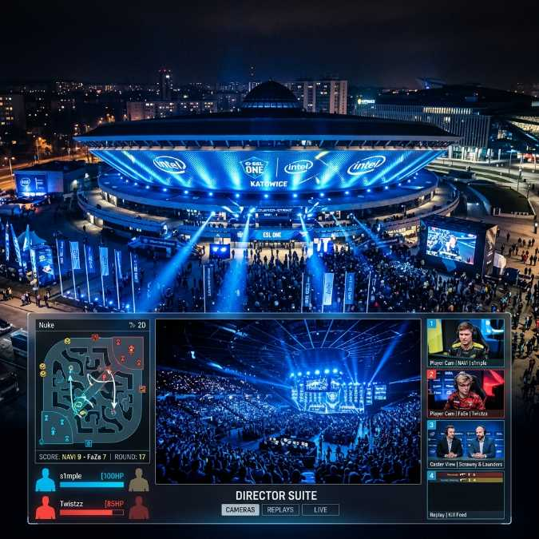

The Rise of Polish Esports: Why You Need Multiple Screens for IEM Katowice

Amazing Question: How would the landscape of competitive gaming evolve if viewers could instantly switch perspectives between players, coaches, and aerial map views simultaneously, fundamentally altering how we consume esports?
Poland has emerged as a global powerhouse in the realm of competitive gaming and esports, firmly establishing itself as a central hub for monumental international tournaments. At the very heart of this digital revolution is the legendary Intel Extreme Masters (IEM) held annually in Katowice. The iconic Spodek arena, with its UFO-like architectural design, has become a veritable temple for gamers worldwide, drawing tens of thousands of passionate fans who travel across the globe to witness history being made in real-time. For an entire generation of Polish youth, entering the Spodek to watch the world’s best Counter-Strike and StarCraft players clash is a pilgrimage akin to attending the World Cup final. The sheer scale and electrifying atmosphere of IEM Katowice are unmatched, creating a spectacle that transcends traditional definitions of sport and entertainment.
The Unprecedented Growth of Competitive Gaming in Poland
The journey of esports in Poland is a fascinating tale of rapid technological adoption and profound cultural shifts. In the early 2000s, competitive gaming was confined to dimly lit internet cafes and cramped LAN parties, where tight-knit communities battled over local area networks. However, as internet infrastructure expanded rapidly across the country, so too did the ambition of Polish gamers. The legendary "Golden Five," a pioneering Polish Counter-Strike team, vaulted the nation onto the international stage with their dominant performances, proving that Poland possessed the talent, dedication, and strategic brilliance to compete—and win—at the highest level. Their legacy inspired a massive wave of young players, turning esports from a niche hobby into a mainstream aspiration. Today, Poland boasts state-of-the-art esports facilities, dedicated gaming academies, and widespread mainstream media coverage. Major television networks broadcast tournaments, and top-tier players are celebrated as national heroes alongside traditional athletes. The cultural impact is undeniable, with video games now recognized as a legitimate and highly respected career path.
The Immense Complexity of Modern Broadcasts
Watching a premier esports tournament like IEM Katowice is no longer a simple, passive experience. The production value of these mega-events rivals, and often exceeds, that of traditional sports broadcasting. Viewers are bombarded with an overwhelming array of data, perspectives, and visual stimuli. The primary broadcast stream typically offers a highly curated mix of player perspectives, slow-motion replays, and expert commentary. While this provides an excellent overview, it inherently limits the depth of engagement for the dedicated fan. To truly understand the intricate tactical nuances, the micro-adjustments, and the overarching strategic narratives unfolding on the digital battlefield, one must look beyond the main feed. This is where the necessity of a multi-screen setup like YoutubeMulti becomes strikingly apparent. A single screen is simply insufficient to capture the breathtaking complexity of high-level competitive gaming.
Strategic Viewing: Building Your Personal Command Center
Imagine transforming your desktop into a personalized, high-tech command center designed specifically for dissecting elite gameplay. With YoutubeMulti, you are no longer a passive spectator; you become your own primary broadcast director. Instead of relying solely on the observer’s camera choices, you can simultaneously stream multiple unique feeds. On your primary display, you might have the main, high-definition broadcast feed, providing the overarching narrative and the thunderous roar of the Spodek arena crowd. On a secondary, tightly integrated screen tile, you can actively monitor the dedicated player point-of-view (POV) streams. Watching a master sniper hold an almost impossible angle, or observing an in-game leader dynamically rotate their team across the map in real-time, provides unparalleled insights into their peerless decision-making processes. Furthermore, utilizing a third display area for the tactical map overlay, real-time statistical readouts, and live economy tracking allows you to predict strategic plays before they even happen. This multi-faceted approach to viewing completely revolutionizes the fan experience, elevating it from mere observation to active, analytical participation.
Engaging with the Vibrant Global Community
The global esports community is inherently intensely social, thriving on rapid-fire interaction and shared emotional experiences. A critical component of watching any major event is actively engaging with the surrounding conversation. Platforms like Twitch, YouTube Gaming, and X (formerly Twitter) explode with real-time reactions, insightful meme templates, and sharp technical analysis during critical match moments. Attempting to constantly switch tabs between the heart-pounding live stream and an endlessly scrolling chat feed inevitably leads to missed action and frustrating delays. By intelligently leveraging the robust multi-window capabilities of YoutubeMulti, you can seamlessly construct a comprehensive dashboard that integrates the live action with the pulsating community dialogue. This unified viewing environment ensures you remain deeply connected to the global conversation, completely avoiding the disruption of frantic tab cycling and allowing you to fully absorb the collective energy of the event.
The Indispensable Tool for the Modern Fan
For the truly dedicated Polish esports enthusiast, and indeed for passionate fans worldwide, a multi-screen setup is no longer viewed as a luxurious novelty; it is an absolute necessity. The sheer volume of concurrent, high-stakes matches during the frenetic group stages of IEM Katowice makes it physically impossible to catch all the crucial action linearly. YoutubeMulti directly empowers viewers to master this chaotic environment, enabling them to flawlessly track multiple distinct streams simultaneously. Whether you are rigorously analyzing intricate tactics to improve your own personal gameplay, enthusiastically following alternating Polish teams to ensure no pivotal moment is missed, or simply striving to immerse yourself as deeply as possible in the electrifying atmosphere of the tournament, multi-viewing profoundly reshapes the spectator paradigm. The future of esports consumption is unequivocally characterized by high degrees of customization, intense interactivity, and multi-faceted engagement. By embracing advanced multi-screen technology, dedicated fans can unlock an entirely new, deeply enriching dimension of competitive gaming, experiencing monumental events like IEM Katowice with unprecedented clarity, control, and profound immersion.
In conclusion, the intersection of Poland's vibrant, rapidly expanding esports culture and advanced viewing technologies creates a uniquely powerful dynamic. As the tournaments grow continuously larger and intrinsically more complex, the tools we utilize to experience them must necessarily evolve in tandem. Embracing a sophisticated multi-screen strategy via YoutubeMulti ensures you remain firmly at the absolute cutting edge, fully prepared to absorb every single thrilling moment of the action, no matter how many screens it requires.